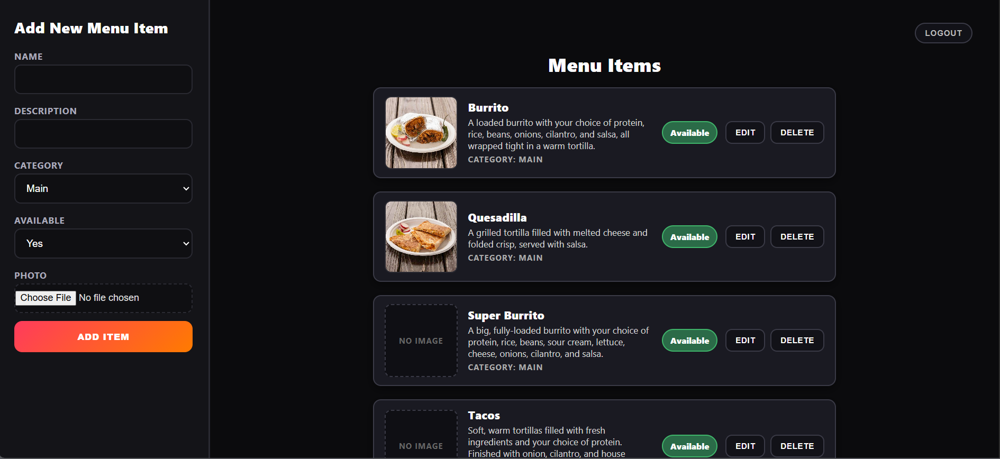
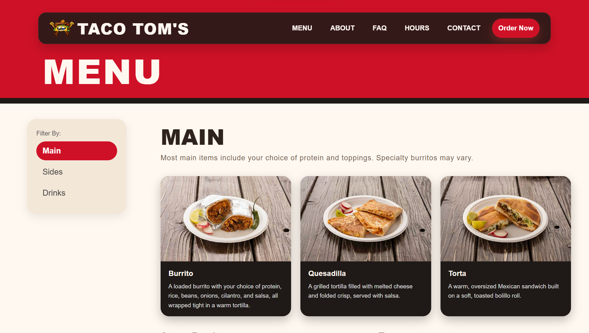
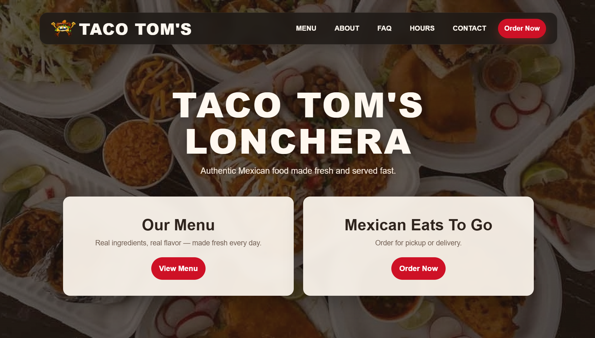

Admin Panel
Menu Management
Interface for adding, editing, and deleting menu items.
Featured Project
A full-stack restaurant website I designed and built end to end: public menu site, secure admin CMS, database, and cloud deployment.
The restaurant needed an easy way to update their menu (items, prices, images) without editing code or relying on a developer for every change.
I created the entire website from scratch: a brand-aligned public menu site plus a secure admin panel connected to a MySQL database, deployed on Fly.io, with images stored in CloudFlare R2. The owner can log in and manage the menu through a simple web interface, and changes appear instantly on the public site.
I owned the entire project: met with the owner to gather requirements, designed the UI/UX, implemented the public menu pages and admin panel, designed the database schema, built the backend API with secure authentication (hashed passwords with a secret/salt, session cookies, protected routes), handled image uploads to R2, and configured deployment on Fly.io.
Handling image uploads securely and reliably while keeping the admin experience simple.
Used CloudFlare R2 with server-side upload logic, validated file types and sizes, and stored only references in the database. This keeps storage scalable and the admin UI straightforward.
Ensuring sessions and cookies worked correctly between local development and the deployed site.
Adjusted cookie settings (secure, sameSite, domain) and tested across environments, using browser dev tools and server logs to trace issues.
A few views of the public site and admin panel.

Admin Panel
Interface for adding, editing, and deleting menu items.

Public Site
Responsive menu listing, dynamically populated from the MySQL database.

Public Site
Brand-focused homepage with navigation to the menu and key information.
Want to explore the site yourself?